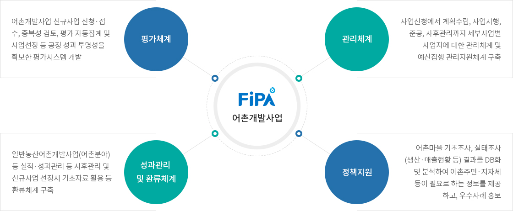
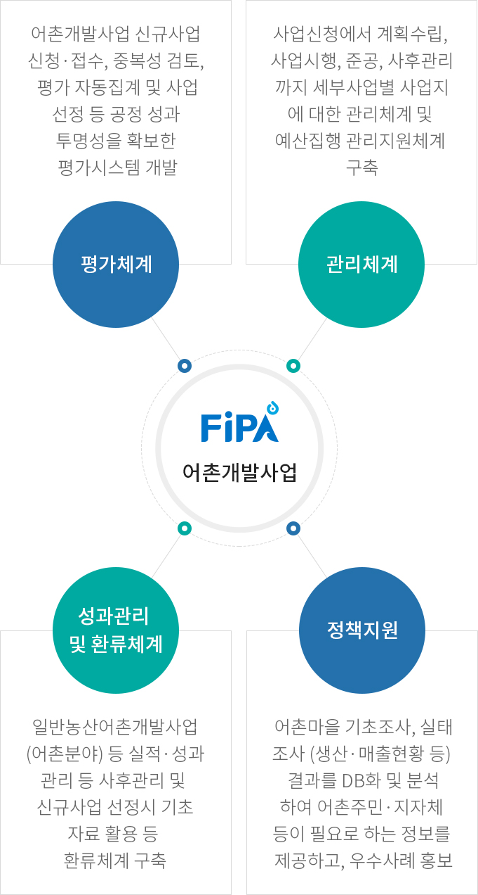

어촌개발사업 관리시스템 구축
- 홈
- 사업소개
- 활력있는 어촌
- 어촌개발사업 관리시스템 구축
기대효과


FiPA 어촌개발사업
- 평가체계 - 어촌개발사업 신규사업 신청·접 수, 중복성 검토, 평가 자동집계 및 사업선정 등 공정 성과 투명성을 확보한 평가시스템 개발
- 관리체계 - 사업신청에서 계획수립, 사업시행, 준공, 사후관리까지 세부사업별 사업지에 대한 관리체계 및 예산집행 관리지원체계 구축
- 성과관리 및 환류체계 - 사업신청에서 계획수립, 사업시행, 준공, 사후관리까지 세부사업별 사업지에 대한 관리체계 및 예산집행 관리지원체계 구축
- 정책지원 - 사업신청에서 계획수립, 사업시행, 준공, 사후관리까지 세부사업별 사업지에 대한 관리체계 및 예산집행 관리지원체계 구축